In this writing, I want to share how scoping the field list in Power BI Explore with a perspective I wrote in TMDL (Tabular Model Definition Language) taught me a sharper line between tidying what a model shows and actually securing it.
My plan was deliberate. Exploration perspectives arrived in the Power BI May 2026 release, listed under the Explore Improvements item, and I wanted to scope what report consumers see when they open Explore on one of my Contoso models. The reason was already clear to me. When I open Explore on the report and expand the customer table, Power BI offers Birthday, StreetAddress, Occupation, even Latitude and Longitude. Anyone who can open that report can start dragging a customer's home address onto a canvas.
That is a lot of personal detail to hand to a self-service surface, and trimming it down was exactly what I set out to do.
1. The Field List I Did Not Want to Hand Out
The model itself is tidy where it counts. The date, product, and store tables hold clean analytical attributes, and a Measure table carries the numbers people actually ask for. But customer is a different story. Next to Gender and CountryFull, it exposes GivenName, Surname, Title, StreetAddress, City, ZipCode, Birthday, Occupation, Company, Vehicle, and a pair of geographic coordinates. That is personally identifiable information (PII), and Explore presents all of it by default.
To see it the way a consumer would, I opened the workspace, found the import_contoso_sales report, and chose "Explore this data."
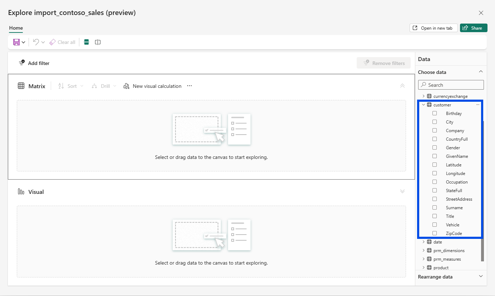
It was not only the personal columns. The list also carried two field-parameter tables, prm_dimensions and prm_measures, that exist to drive report authoring, plus a calculation group and an internal documentation table. None of that helps someone who just wants to slice sales by brand. The surface was both sensitive and noisy.
2. Why the Desktop UI Could Not Help Me
My first instinct was to look for a perspective editor in the Desktop modeling UI. There isn't one. The Common use cases for TMDL view section of the Power BI Desktop documentation lists creating a perspective as a scenario, precisely because, in its words, you can't create or edit one using the graphical interface of Power BI Desktop. The recommended path is to open TMDL view and script it.
That suited me. A perspective I write as code is a perspective I can read in a diff later.
3. Writing the Perspective in TMDL
In TMDL view I wrote a createOrReplace script, the scripting verb documented in the createOrReplace command section of the TMDL scripts reference, and named the perspective Sales Explore. Each table I wanted on the surface became a perspectiveTable, and under it I listed only the perspectiveColumn and perspectiveMeasure entries that belong in self-service.
createOrReplace
perspective 'Sales Explore'
perspectiveTable date
perspectiveColumn Year
perspectiveColumn YearMonth
perspectiveColumn Month
perspectiveColumn DayofWeek
perspectiveColumn 'Year-Week Number'
perspectiveTable product
perspectiveColumn Brand
perspectiveColumn CategoryName
perspectiveColumn SubCategoryName
perspectiveColumn ProductName
perspectiveColumn Manufacturer
perspectiveColumn Color
perspectiveTable store
perspectiveColumn CountryName
perspectiveColumn State
perspectiveColumn StoreCode
perspectiveColumn Status
perspectiveColumn SquareMeters
perspectiveTable customer
perspectiveColumn Gender
perspectiveColumn CountryFull
perspectiveTable Measure
perspectiveMeasure 'Number of Orders'
perspectiveMeasure 'Total Quantity'
perspectiveMeasure 'Number of Customers'
perspectiveMeasure 'Total Cost'
perspectiveMeasure 'Number of Stores'
perspectiveMeasure 'Number of Products Sold'
perspectiveMeasure 'Number of Orders YoY'
perspectiveMeasure 'SPLY Number of Orders'
perspectiveTable 'Internal Measures'
perspectiveMeasure 'Total Sales'
perspectiveMeasure 'SPLY Total Sales'The customer block is the whole point. It lists Gender and CountryFull and nothing else, so Birthday and StreetAddress are not excluded by a rule, they are simply never named. I kept the eight measures people ask for (including SPLY Number of Orders, where SPLY stands for Same Period Last Year) and left out scratch measures like Test and Count of brand v1. The field-parameter tables, the calculation group, the documentation table, and the hidden fact table never enter the script at all.
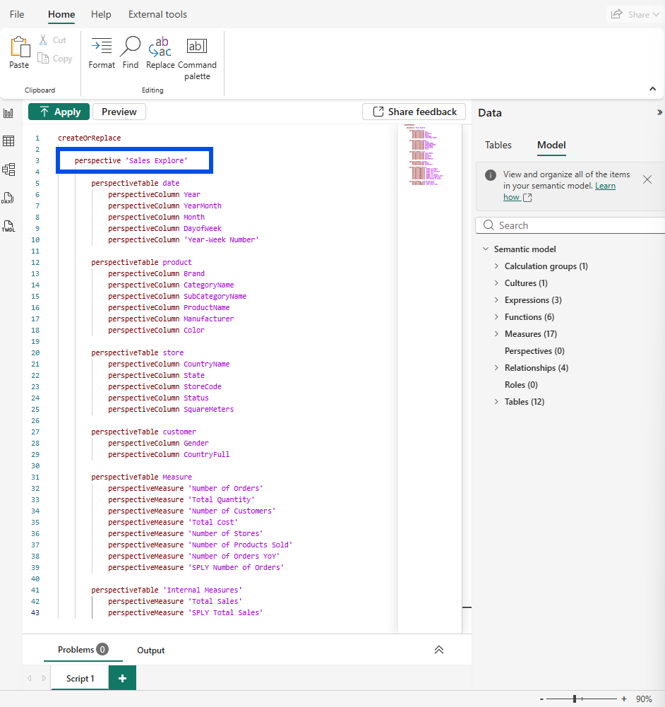
Then I selected Apply.
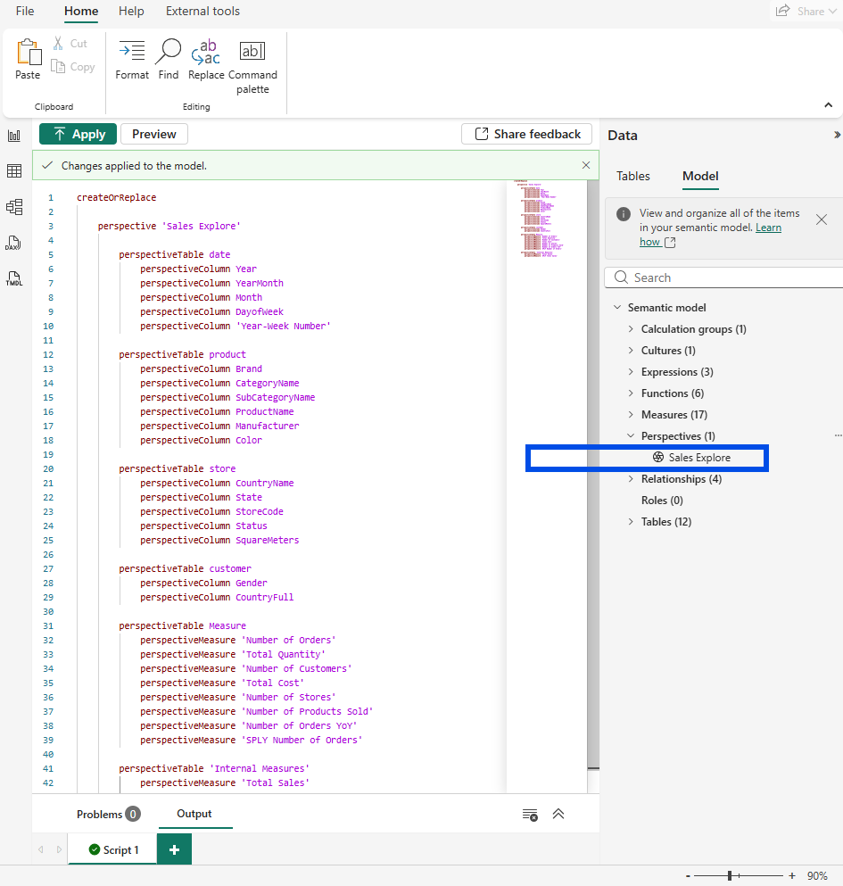
4. Pointing Explore at the Perspective
A perspective in the model does nothing for Explore on its own. You have to tell the report to use it. In Desktop that lives under File > Options and settings > Options > Current File > Report settings, in a section called "Explore perspective," which the documentation lays out in its Set an Explore perspective steps. I set it to Sales Explore.
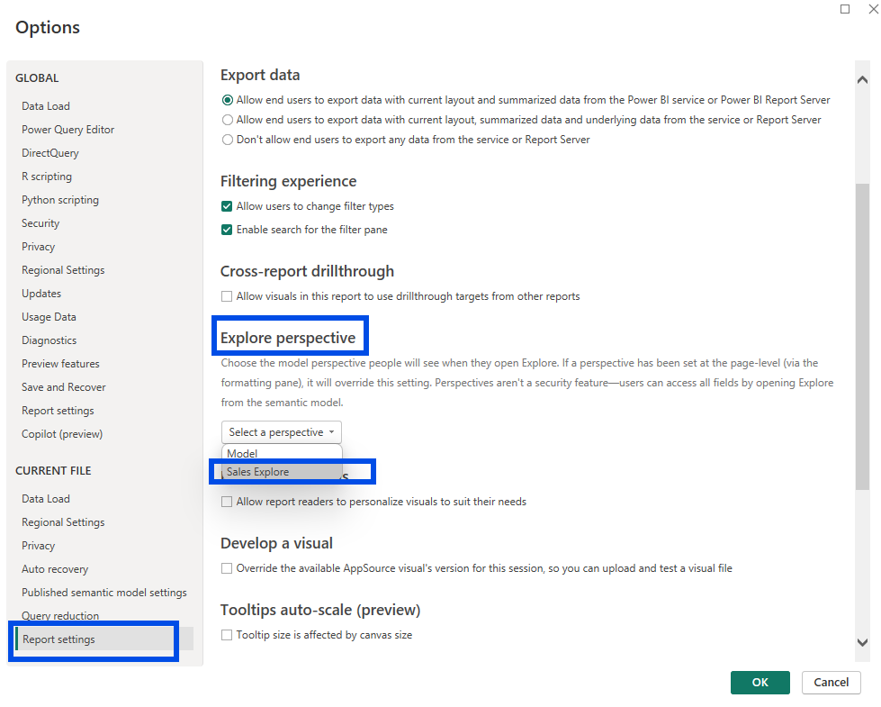
The help text inside that very dialog is worth reading slowly. It says a page-level perspective set in the formatting pane will override this setting, and it states plainly that perspectives "aren't a security feature," because users "can access all fields by opening Explore from the semantic model." I noted that and moved on, not yet appreciating how literally it would play out.
5. The Scoped Surface, and What the Consumer Gains
I published the report and opened Explore on it again.
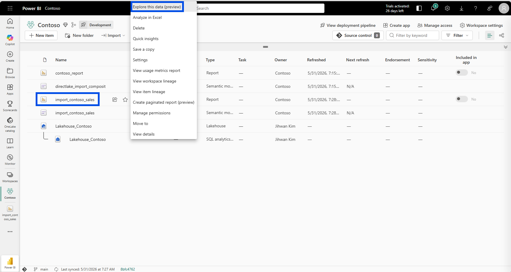
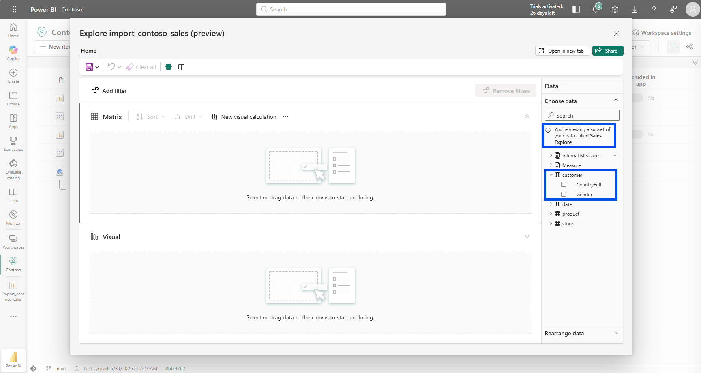
The banner, "You're viewing a subset of your data called Sales Explore," confirmed it. The customer table now offered two fields instead of fifteen. The field-parameter tables and the documentation table were gone.
This is the benefit a report consumer actually feels. The Microsoft documentation frames the goal in its Perspectives section as giving consumers a more focused list of tables and fields when a model is large. Someone opening Explore now lands on the analytical fields and the blessed measures, not a wall of columns where the right one is three scrolls down next to a customer's birthday. Fewer wrong-field detours, less cognitive load, and the personal columns are off the default surface by design. For a self-service audience, that focus is the difference between a usable experience and an intimidating one.
6. The Semantic Model Handed It All Back
Then I tested the sentence from that dialog. Instead of opening Explore on the report, I opened it on the semantic model.
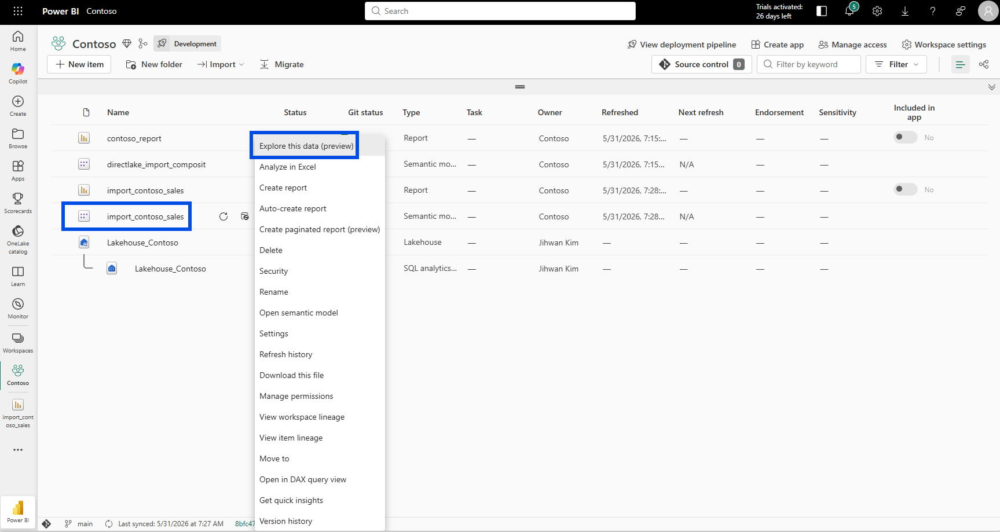
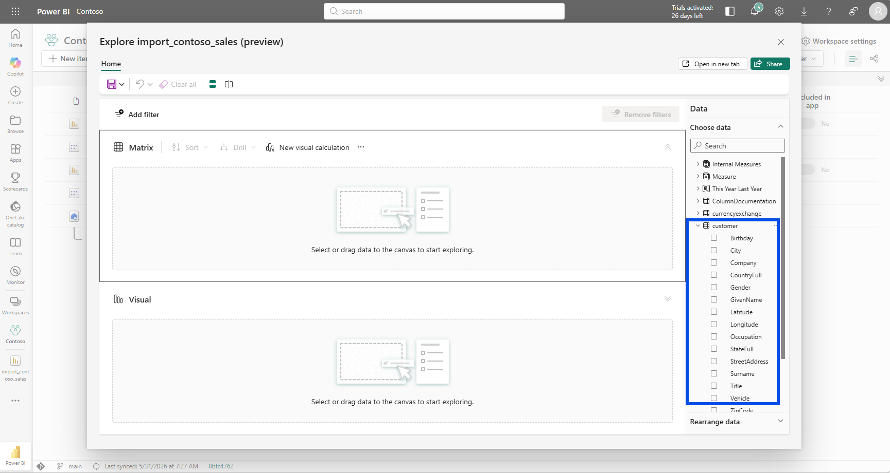
Every field was back. Birthday, StreetAddress, Vehicle, the coordinates, all of it. The perspective I had set on the report had no say here, because this Explore session started from the model, not from the report that carries the setting.
This was my aha moment: a perspective scopes the surface, but it does not secure it. The product had told me so in the settings dialog, and the Use Perspectives for a more focused view section of the personalize-visuals documentation says it in writing: perspectives "aren't meant to be used as a security mechanism," and all security is inherited from the underlying model.
If the goal is to actually keep Birthday away from a viewer, the mechanism is object-level security (OLS), not a perspective. The object-level security documentation describes exactly this case, securing a column that holds personal data so only certain viewers can see and interact with it. Row-level security (RLS) does not cover it either; the RLS FAQ answers the question "Can I use RLS to limit the columns or measures accessible by my users?" with a plain no, because a user who has access to a row can see all the columns for that row, and it points to object-level security for column restriction. I had drawn the same line in an earlier post on a calculated-column pattern that is not row-level security, and it held here too.
7. One Word, Two Settings, Different Files
There is a second place the word perspective shows up, and it caught me out. Personalize visuals, the reading-view feature that lets consumers tweak a visual, also scopes its field list with a perspective. But that one is a per-page setting, not a report-level one. You set it in the Format pane, under Report-reader perspective for a page, as the same Use Perspectives for a more focused view section explains, and you have to choose "Apply to all pages" to cover the whole report.
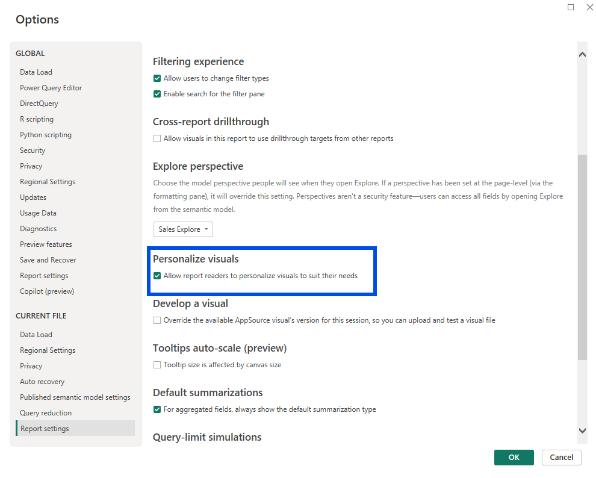
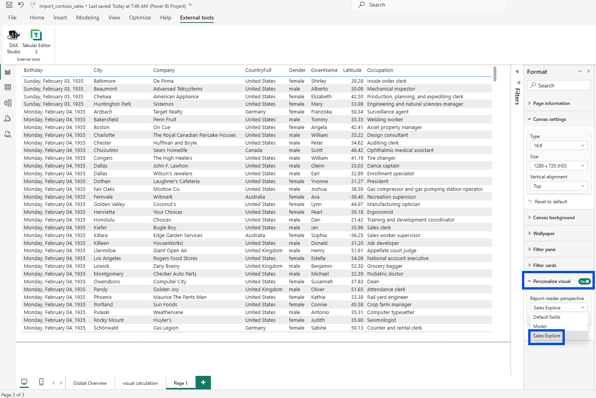
I set it on a single page to see what happened. Only that page picked up the perspective; the others kept their full field list. That is the page-level override the Explore dialog had warned me about, made concrete. So in one report I now had a model-level perspective object, a report-level Explore setting that points at it, and a page-level personalize setting that points at it again, each living in a different place and each scoping a different experience. Keeping straight which one governs what, and where each is stored, is genuinely the fiddly part of this feature.
8. From a DevOps Standpoint: One Decision, Several Diffs
Because I wrote the perspective as TMDL and the model is a Power BI Project (PBIP), every part of this decision is now text in source control. After I saved, Git showed me the full footprint of one governance choice.
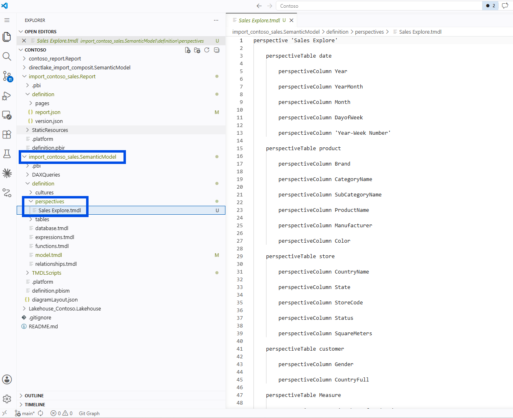
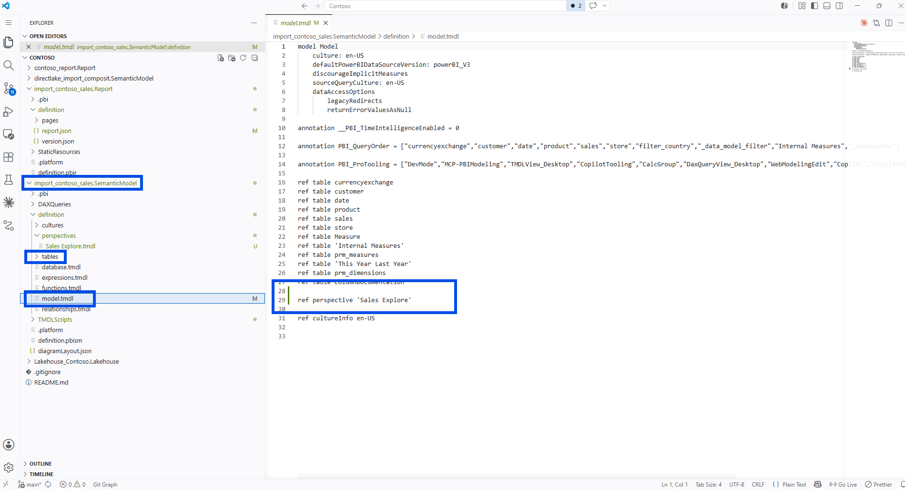
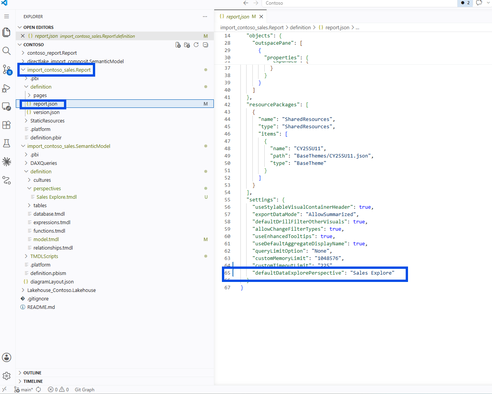
The perspective itself landed as a new definition/perspectives/Sales Explore.tmdl file, and model.tmdl gained a single ref perspective 'Sales Explore' line. On the report side, in my report.json, the Explore choice wrote itself as defaultDataExplorePerspective. When I enabled Personalize visuals, the same settings block gained allowInlineExploration, and the per-page choice landed in that page's page.json as personalizeVisual.perspectiveRef. I am describing these property names as I observed them in my own files; I have not found a Microsoft Learn page that enumerates each string, so I would read them as the report definition's stored shape rather than documented contract.
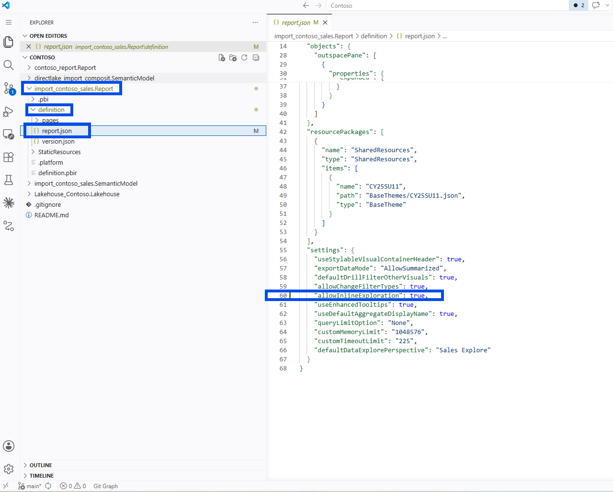
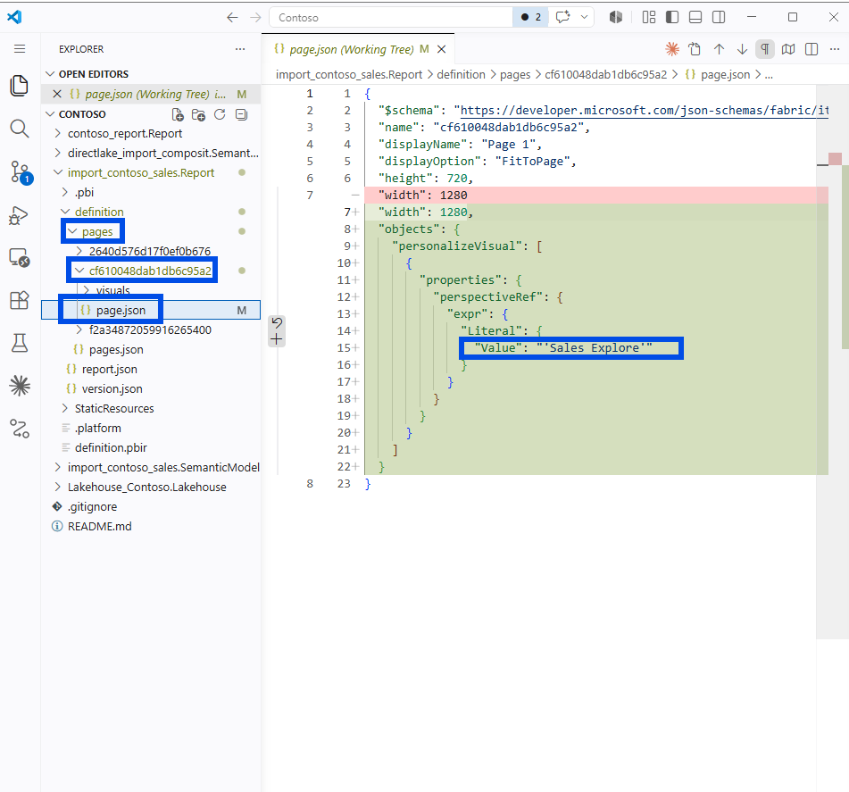
Version Control
Every one of those changes is a readable diff. The old way of curating a field list, clicking through a tool and hoping you remembered, left nothing behind. Here, the exact set of fields I exposed to self-service is a file, and the wiring that activates it is two more lines I can point at.
Code Review
This is the part I find most useful. A reviewer opening the pull request can see the customer block lists only Gender and CountryFull, and can ask the right question if a sensitive column ever shows up in that list. A perspective that quietly adds StreetAddress would be obvious in review, instead of invisible until a consumer stumbles onto it.
Governance
The diff also keeps me honest about what the change is and is not. The perspective tidies and focuses the surface; it sits next to object-level and row-level security, not in place of them. Reviewing the perspective and the security roles together, as code, is a far calmer conversation than discovering the difference in production.
A Note on Working with AI
I want to be transparent about one part of this, because it runs against the usual story. The word perspective lives in at least four places here: the model perspective object in TMDL, the report-level Explore setting (defaultDataExplorePerspective), the per-page Personalize visuals setting (personalizeVisual.perspectiveRef), and the allowInlineExploration flag that turns the latter on. Finding all four is genuinely hard, and this is the part where AI did not really help me.
When I asked Claude (AI) where a perspective is wired in a report, it did not hand me that list. I found the places myself, by clicking through Report settings and the Format pane, and then reading the actual report.json and page.json. My honest take is that the surface area is scattered enough that a general assistant does not have it mapped. The improvement I would want is grounding. If the assistant learned from the official documentation and the report definition schema instead of guessing, it could point at every place a perspective shows up, not just the obvious one. That is the kind of help I would trust, because it comes from the source rather than from a confident guess.
Closing Thoughts
This experience left me with a new mental model: an Exploration perspective curates what self-service users see by default, but the lock on the door is still object-level and row-level security.
The more I treat these settings as code, the easier it is to see, right there in a diff, the difference between tidying a surface and securing it. A perspective written in TMDL gives me the first; a few lines in report.json and page.json wire it to the right experience; and when I need the second, OLS and RLS are waiting, also as part of the model I can review.
I hope this helps having fun in exploring perspectives, Explore, and TMDL, and embracing this new era of treating governance decisions as reviewable code!